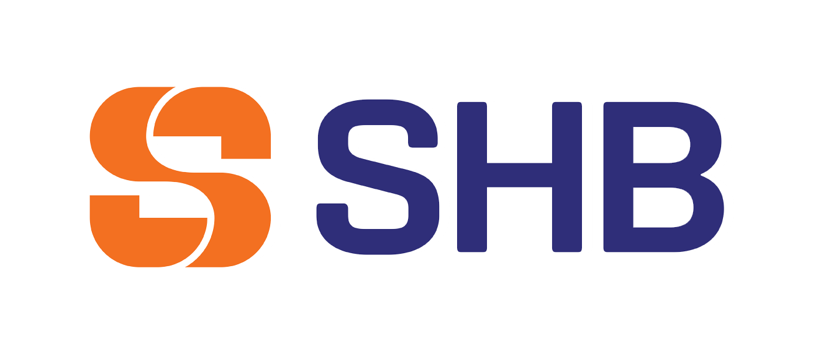
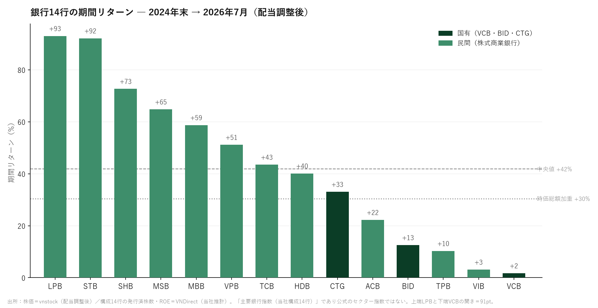
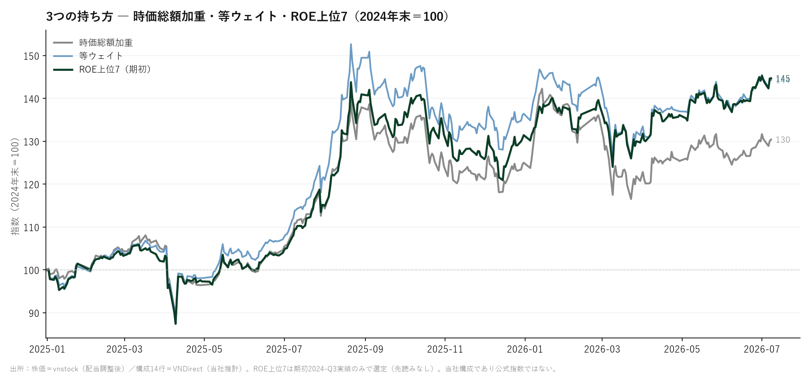
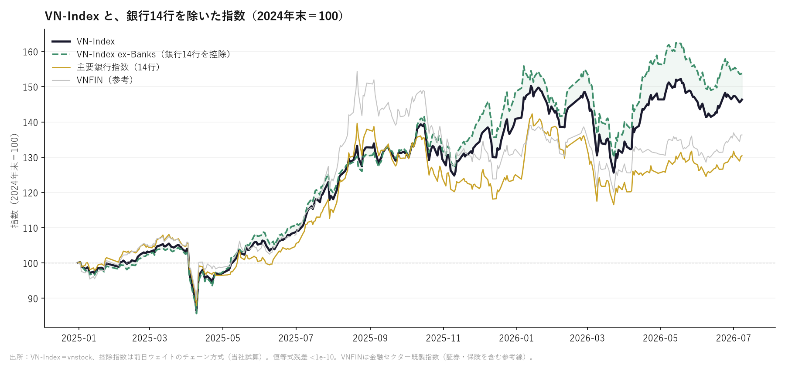
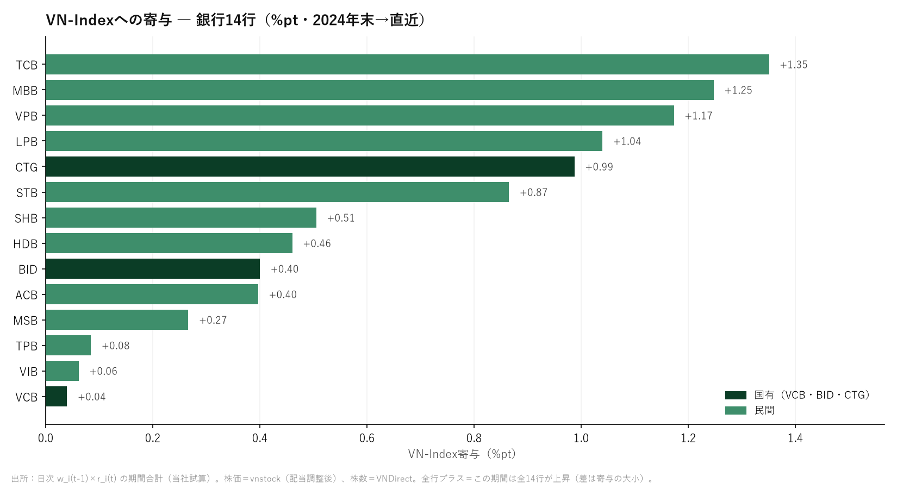

CAPITAL QUEST CORPORATION
投資調査部 ｜ Vietnam Weekly
投資調査部 ｜ Vietnam Weekly
VOL.02 ― 2026.7.6–7.10週
7月13日（月）発行
7月13日（月）発行
WEEKLY QUEST ② ― 今週の企業クエスト
静かなる支配者― ベトナムを動かす14の銀行




ベトナムの銀行セクターは、国家が握る巨大な基盤と、民間資本が切り開く成長領域という、二つの力学の上に立っている。金融システム全体を支えるのは、国有銀行を中心とする「Big4」だ。Vietcombank、BIDV、VietinBank、Agribankは、預金、融資、決済網のいずれでも圧倒的な存在感を持つ。とりわけ国営企業、大型インフラ、地方経済への資金供給では、単なる民間企業を超えた政策装置として機能してきた。
このうち上場する3行は、株式市場でも時価総額上位を占める。高い信用力、全国に広がる支店網、潤沢な預金基盤は、景気後退局面でこそ強みとなる。政府が経済成長率、住宅供給、輸出産業の競争力を維持しようとする時、国有銀行は資金の流れを支える「国家の金庫番」となる。経済の急拡大を金融面から支えた功績は大きい。
ただし、国有銀行の強さは、同時に課題も映す。国策融資や大型企業向け融資への依存は、資本効率や収益性を抑える要因になりうる。急速に拡大する民間企業、デジタル消費、都市部の住宅需要に対し、従来型の大銀行だけで資金需要を吸収することは難しい。そこで存在感を増しているのが、民間商業銀行である。
Techcombank、VPBank、MBBank、ACBなどは、住宅ローン、中小企業融資、消費者金融、カード、デジタル決済といった成長市場で顧客を広げてきた。国有銀行が「規模」と「安定」を担うなら、民間銀行は「速度」と「収益性」を追う。アプリを起点に口座開設から融資、資産運用までをつなぐ戦略は、若い人口と高いスマートフォン普及率を持つベトナム市場と相性がよい。
もっとも、民間銀行の成長は不動産市場と切り離せない。開発業者向け融資や住宅購入者向けローン、社債市場との関係は深く、不動産調整が長引けば不良債権や引当負担が重くなる。高成長の裏側には、信用コストの上昇というリスクが常にある。
国有と民間は対立する存在ではない。前者が経済の土台を守り、後者が新たな需要を掘り起こす。ベトナムの銀行株を見る際に問われるのは、どちらが優れているかではなく、安定を担う国家資本と、成長を取りに行く民間資本が、次の経済段階でどのように役割を分けるかである。金融の主役交代ではなく、二つの銀行モデルの競争と共存こそが、ベトナム市場の次の章を形づくる。
| 銀行 | 区分 | 時価総額（円換算） | PER | PBR | 外国人枠 消化 |
|---|---|---|---|---|---|
| VCB／ベトコムバンク | 国有 | 約3.1兆円 | 14.1x | 2.16x | 67% |
| BID／ベトナム投資開発銀行 | 国有 | 約1.8兆円 | 9.7x | 1.61x | 59% |
| CTG／ベトナム工商銀行 | 国有 | 約1.6兆円 | 6.9x | 1.40x | 82% |
| TCB／テクコムバンク | 民間 | 約1.4兆円 | 8.8x | 1.34x | 95% |
| VPB／VPバンク | 民間 | 約1.3兆円 | 8.1x | 1.25x | 80% |
| MBB／MBバンク | 民間 | 約1.2兆円 | 7.2x | 1.38x | 96% |
| LPB／LPバンク | 民間 | 約9,800億円 | 14.3x | 3.94x ※ | 22% |
| HDB／HDバンク | 民間 | 約8,300億円 | 7.9x | 1.68x | 80% |
| STB／サコムバンク | 民間 | 約8,200億円 | 28.6x ※ | 2.15x | 38% |
| ACB／アジア商業銀行 | 民間 | 約8,100億円 | 8.0x | 1.33x | 82% |
| SHB／サイゴンハノイ銀行 | 民間 | 約4,000億円 | 5.3x | 0.77x | 13% |
| SSB／SeAバンク | 民間 | 約3,400億円 | 17.8x | 1.34x | 1% |
| VIB／ベトナム国際銀行 | 民間 | 約3,400億円 | 7.2x | 1.18x | 79% |
| TPB／TPバンク | 民間 | 約2,700億円 | 6.0x | 1.00x | 78% |




週次+4.71%でVN30の値上がり首位。銀行セクターが全業種最大の重石に沈むなか、明確に上げた銀行はLPBだけだ。PBRは3.94倍とVN30銀行で唯一の3倍台（他行はおおむね1〜2倍台）で、市場の「特別扱い」が続く。今年5月には現金配当30%（約9兆ドン＝約5,500億円規模）を実施し、4月の株主総会では国際金融センター（VIFC）への子銀行設立構想も掲げた。外国人保有枠の消化は22%と余地を残す。なお週間の外国人は−7十億ドンと小幅な売り——この上げは国内主導である。
WHY NOW?——特集で示した「銀行内リターン格差91pt」のトップランナー。銀行が売られる週も、銀行の中の選別は止まらない。
週次+3.11%でVN30の3位。外国人の週間買い越しは+434十億ドン（約27億円）と断トツの首位で、VN30全体が約2.0兆ドンの売り越しに沈むなか、まとまった買いが入った唯一の大型株となった。市場全体がリスクオフに傾いた週の、ディフェンシブ消費株への回帰である。7/17（金）には1株1,850ドンの配当支払を控える。
WHY NOW?——「外国人が何を売り、何を買ったか」は地合いの体温計。売り一色の週にVNMだけが買われた事実は、避難先の所在を示す。
シンガポールのUOBは7/10、ベトナムの2026年GDP成長予測を7%から8.5%へ引き上げた。上半期の実績+8.18%が想定を大きく上回り、AI需要を追い風とする製造業と、登録ベースで前年比+61%の346.5億ドルに達した上半期FDIを評価した。一方で同行は、7月下旬に発効が見込まれる米Section 301関税を下期最大のリスクに挙げる——強気と関税リスクが同居する構図だ。
現地報道によると、6〜12か月定期の表面金利6.5〜7%に販促上乗せが加わり、大口預金の実質金利は8.5〜9%に達している。背景はSBVデータ（6/15時点）が示す与信+6.38%と預金+4.3%のギャップ＝資金調達競争の再燃だ。調達コスト上昇は利ざや（NIM）圧迫の連想につながり、先週の銀行株安の文脈でもある——特集で描いた「民間の海」の競争は、預金の奪い合いから始まっている。
VietBank（VBB）が7/14にUPCoMからHOSEへ移り、約10.7億株が基準価格13,300ドンで取引を開始する。BVBank（BVB）も7/8を最後にUPCoMでの取引を終え、移管手続き中。特集の漏斗で示した「上場27行」の内訳（HOSE20行）が、まさに今週から動き出す。上位市場への移管は機関投資家の投資対象入りへの一歩で、FTSE昇格を前にした「棚の引っ越し」が続く。
上場唯一の製油所ビンソン（BSR）が7/8にQ2実績を開示。四半期の税引後利益は約4,100十億ドン（前年同期比＋384％＝約4.8倍）、売上は5.5兆ドン超（＋50％）。上半期では純利益約13兆ドン（前年比約7倍）・売上100.9兆ドン超に達し、半年で通年の純利益計画の5.8倍を稼いだ。原油高という追い風が、株価（週間＋3.24％で値上がり2位）とセクター（石油・ガスが唯一のプラス＋1.8％）にそのまま表れた。7月中旬から本格化するQ2決算——特集した銀行の番も近い。
MSNは週間−4.19%と下位に沈み、外国人の週間売り越し額は−485十億ドン（約30億円）とVN30で最大だった。現地報道では、株価下落を受けてグエン・ダン・クアン会長が一時ビリオネア圏（10億ドル）を割り込んだと報じられている。消費財の雄も、リスクオフの週には売り筆頭に回る——VOL.04で予定するマサン特集の前奏である。